例题 1
例 1 在长方体 中,证明直线 平行于平面 .
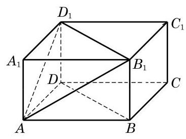
图 10-3-2
答案与解析收起 / 展开
证明 如图 10-3-2,因为棱 平行且等于棱 ,所以 是平行四边形,从而 . 因为直线 在平面 上,而直线 不在平面 上,由上述判定定理,得到直线 平面 .
教师整合版 / 沪教版高中数学
必修第三册
第10章空间直线与平面 · 保留教材主线与原题
教材与正式教参整合
上面我们已按照直线与平面的公共点的个数来划分了空间直线与平面的位置关系, 其中, 当直线与平面没有公共点时, 我们说直线与平面平行, 并沿用平面几何中的平行符号来表示, 如 . 但是,因为直线与平面都是无限延伸的,要直接判断直线与平面是否有公共点往往是比较困难的, 所以我们需要一个简便的直线与平面平行的判定定理.
观察房门的转动情景可以看到，房门开启后，无论门转到什么位置, 房门外沿所在的直线始终都是和门框所在的平面平行的. 这是因为房门的外沿与内沿是平行的, 而在房门的转动过程中, 内沿始终都在门框所在的平面上. 由此可以引出下面的直线与平面平行的判定定理:
直线与平面平行的判定定理 如果不在平面上的一条直线与这个平面上的一条直线平行, 那么该直线与这个平面平行.
下面, 用反证法来证明这个定理.
已知: 如图 10-3-1,直线 不在平面 上,直线 在平面 上,且 .
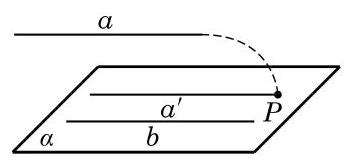
图 10-3-1
求证: 直线 平面 .
证明 假设直线 不平行于平面 ,则直线 与平面 有公共点,设为点 . 在平面 上,过点 作已知直线 的平行线 . 因为 不在 上,所以 与 不重合. 另一方面,因为 ,所以 ,这和 与 交于点 矛盾. 所以原假设不成立,从而 .
依据上述判定定理, 要判定不在平面上的一条直线与这个平面平行, 只要在此平面上找到此直线的一条平行线即可.
例 1 在长方体 中,证明直线 平行于平面 .

图 10-3-2
证明 如图 10-3-2,因为棱 平行且等于棱 ,所以 是平行四边形,从而 . 因为直线 在平面 上,而直线 不在平面 上,由上述判定定理,得到直线 平面 .
例 2 证明: 空间四边形相邻两边中点的连线, 必平行于经过另外两边的平面.
已知: 如图 10-3-3,在空间四边形 中,设 分别是两边 的中点.
求证: 平面 .
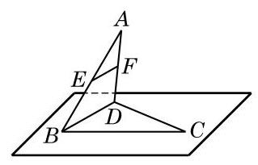
图 10-3-3
(1)与 平行的平面是___；
(2)与 平行的平面是___.
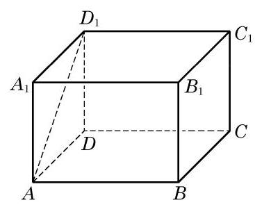
(第 1 题)
(1)若直线 上有无数个点不在平面 上，则 ；
(2)若直线 与平面 上的一条直线平行,则 与平面 上的任意一条直线都平行;
(3)若两条平行直线中的一条平行于一个平面, 则另一条直线也平行于这个平面;
(4)设直线 在平面 上，直线 不在平面 上，并且 ，则 .
2.(1)假命题. 因为当直线 与平面 相交时,除交点外其余的点有无数个,且不在平面 上.
(2)假命题. 因为若将平面 上与 平行的直线记为 ,则在平面 上与 相交的直线都不与 平行.
(3)假命题. 反例:若 在平面 上,显然 与平面 不平行.
(4)真命题. 由直线和平面平行的判定定理可知.
(1)平面 上的所有直线都与 异面;
(2)平面 上不存在与 平行的直线；
(3)平面 上存在唯一的一条直线与 平行;
(4)平面 上的直线都与 相交.
如果一条直线和一个平面平行, 那么这个平面上是否一定可以找到与这条直线平行的直线呢? 有下面的定理.
直线与平面平行的性质定理 如果一条直线与一个平面平行, 过这条直线的一个平面与此平面相交, 那么其交线必与该直线平行.
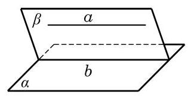
图 10-3-4
如图 10-3-4,已知直线 与平面 平行,过直线 的一个平面 与平面 相交于直线 .
求证: .
证明 由 ,故 和 没有公共点.
又因为 ,所以 和 没有公共点.
因为 和 同在平面 上,且没有公共点,所以 .
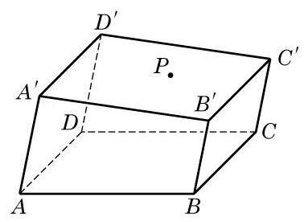
图 10-3-5
(1)不成立. 因为平面 上过点 的直线与 不是异面直线的关系.
(2)成立. 如果存在与 平行的直线,那么 就平行于平面 ,这与已知矛盾.
(3)不成立. 理由同(2).
(4)不成立. 平面 上不过点 的直线都与 不相交.
例 3 在如图 10-3-5 所示的一块木料中,棱 平行于平面 .
(1)要经过平面 内的一点 和棱 将木料锯开, 应怎样画线?
(2)所画的线与平面 是什么位置关系？
解(1)因为 平行于平面 ,平面 经过 并与平面 交于 ,由上述定理,得 .
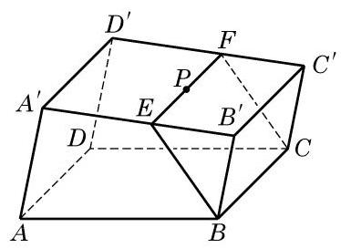
图 10-3-6
在平面 上,过点 作直线 ,使 , 分别交棱 于点 . 连接 ,则 、 及 就是应画的线,如图 10-3-6 所示.
(2)所画的线中， 显然都与平面 相交. 又因为 ，从而 . 因此，由前述的判定定理，有 平面 .
(1)若两直线 互相平行,则 平行于经过 的任何平面；
(2)若直线 与平面 平行，则 平行于 内的任何直线；
(3)若两直线 都与平面 平行，则 ；
(4)若直线 平行于平面 ，直线 在平面 上，则 或者 与 为异面直线.
1.(1)假命题. 记 确定的平面为 ,则 经过 ,且 在平面 上, 不平行于平面 .
(2)假命题. 设过 的平面与平面 交于直线 ,在平面 上与 相交的直线与 都不平行.
(3)假命题. 都与平面 平行时,则 可以是平行或者相交或者异面直线关系.
(4)真命题. 因为 平行于平面 ,所以直线 与平面 上的任意直线都没有公共点,所以 与 不是平行关系就是异面关系.
证明: 过 作平面 与平面 相交于 ,则由线面平行的性质定理,可得 . 因为 ,所以 ,而 在平面 上, 不在平面 上,故由线面平行的判定定理可得 .
如图 10-3-7,将书打开直立在桌面上,观察书的书脊 和各页与桌面的交线的位置关系,可以发现: 书脊 所在的直线,和每一页与桌面的交线都是垂直的. 这时,我们说书脊 所在的直线垂直于桌面所在的平面.
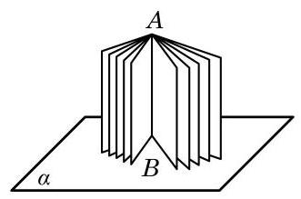
图 10-3-7
日常生活中, 旗杆与地面、桥柱与水面等, 都给我们以一条直线和一个平面垂直的形象.
定义 如果一条直线与平面上的任意一条直线都垂直, 就说这条直线与这个平面互相垂直.
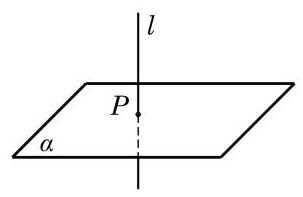
图 10-3-8
显然, 用上述定义来直接判断线面垂直关系是很困难的, 能否像线面平行的情形一样找到一个简便的判定定理呢?
先做一个实验: 请同学们准备一块三角形纸片 ,过 的顶点 翻折纸片,得到折痕 . 将翻折后的纸片竖起放置在桌面上,并使得边 均在桌面上.
(1)折痕 与桌面垂直吗?
(2)如何翻折才能使折痕 与桌面所在平面 垂直？
通过实验会发现,当且仅当折痕 是边 上的高时, 所在直线与桌面所在平面才垂直(图 10-3-9).
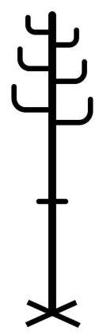
图 10-3-10
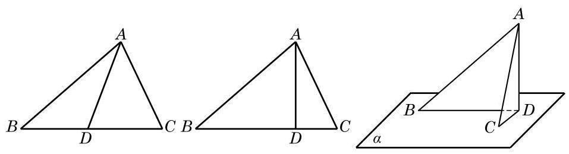
图 10-3-9
生活中, 我们可以发现许多竖杆的底座是十字形的(图 10-3-10)，只要竖杆与底座的两条边垂直，就可以保证竖杆垂直于地面。
由上面的实验和实际经验, 我们可以发现下面的事实.
直线与平面垂直的判定定理 如果一条直线与一个平面上的两条相交直线都垂直, 那么此直线与该平面垂直.
有兴趣的同学可以自己试一试证明此判定定理.
有了这个判定定理, 我们就可以解释上面的实验与实际经验. 例如,在图 10-3-9 中,由折痕 ,而翻折保持这种垂直关系不变,从而 . 因此,由上述判定定理就知道,折痕 与桌面所在的平面 垂直.
例 4 证明: 如果两条平行直线 中的一条 垂直于一个平面 ,那么另一条 也垂直于这个平面 .
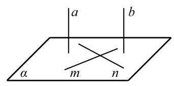
图 10-3-11
证明 如图 10-3-11,在平面 内作两条相交直线 . 因为 ,根据直线与平面垂直的定义,知 . 又因为 ,所以 . 因为 是平面 上的两条相交直线,所以 平面 .
由例 4 可知, 如果一组平行线中的一条与一个平面垂直, 那么其他平行线也都与这个平面垂直. 我们现在考虑反过来的问题: 垂直于同一个平面的直线是否都平行呢?
答案是肯定的, 我们有下面的定理.
直线与平面垂直的性质定理 垂直于同一个平面的两条直线互相平行.
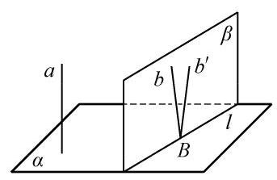
图 10-3-12
已知: 是两条直线,且 (图 10-3-12).
求证: .
证明 用反证法. 设 与 不平行,直线 与平面 的交点为 . 过点 作直线 ,使得 . 由直线 与 确定的平面记为 ,设平面 与平面 的交线为 . 因为 ,所以 ; 由 ,又可得出 . 直线 与 都在平面 上，都过点 ，且都垂直于直线 ，这与“在同一个平面上，过一点有且只有一条直线与已知直线垂直”矛盾. 由此得到 .
由上述线面垂直的定义和定理可以得到下面的推论:
推论 1 过一点有且只有一个平面与给定的直线垂直.
推论 2 过一点有且只有一条直线与给定的平面垂直.
由推论 2,如图 10-3-13 (1),过平面 外任意给定的一点 ,有且只有一条直线与平面 垂直,从而把点 与垂足 之间的距离叫做点 到平面 的距离. 利用线面平行和线面垂直的性质定理可以证明,如果一条直线 平行于一个平面 ,那么直线 上任意两点到平面 的距离都相等 (证明过程留作习题),从而就可以把直线 上一点 到平面 的距离定义为直线 到与它平行的平面 的距离 (图10-3-13(2)).
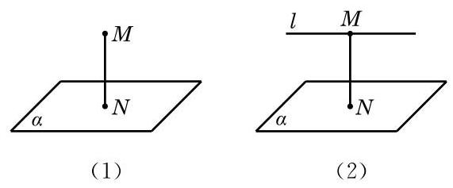
图 10-3-13
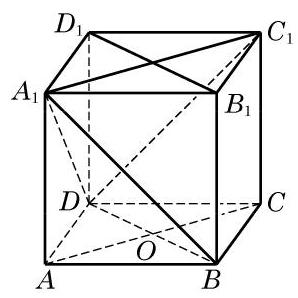
图 10-3-14
例 5 如图 10-3-14,在正方体 中,
(1)判断直线 与平面 ,以及直线 与平面 是否垂直,并证明你的结论;
(2)设正方体的棱长为 1，分别求点 及直线 到平面 的距离.
解 (1) 直线 与平面 垂直. 证明如下: 由正方体的定义,知 ,从而 垂直于底面 ,所以 . 因为底面是正方形,其对角线互相垂直,所以 . 由于 和 是平面 内的两条相交直线,由前述的判定定理,得 平面 .
直线 与平面 不垂直. 理由是: 因为 , 而 是等边三角形, ,所以直线 与平面 上的一条直线 不垂直,从而直线 与平面 不垂直.
(2)由(1)，知 与平面 垂直，所以 到平面 的距离就是垂线段 的长度,它等于 . 又因为 ,由直线和平面平行的判定定理,知 平面 ,从而 到平面 的距离就是点 到平面 的距离,等于 .
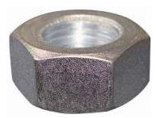
(第 1 题)
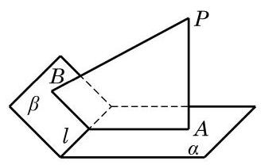
(第 3 题)
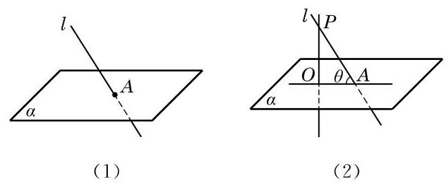
图 10-3-15
在直线与平面垂直的情况下，其投影就是相应的垂足.
另外, 我们约定, 如果一条直线垂直于平面, 我们说它们所成的角是直角; 如果一条直线和平面平行或在该平面上, 就说二者所成的角是 的角.
例 6 证明: 从平面外一点向这个平面所引的垂线段和斜线段中,
(1)垂线段比任何给定的一条斜线段都短;
(2)两条斜线段相等的充要条件是它们相应的两条投影相等.
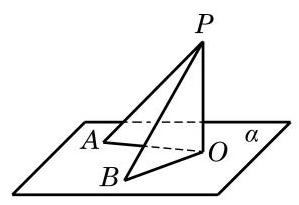
图 10-3-16
证明 如图 10-3-16,记 是平面 的垂线段, 和 是平面 的斜线段, 和 分别是它们在平面 内的投影.
(1)因为 ，由直线与平面垂直的定义，有 . 由直角三角形中斜边与直角边的关系,知 ,所以垂线段比任何给定的一条斜线段都短.
(2)先证充分性. 设 ，则直角三角形 与直角三角形 全等，所以 . 再证必要性. 如果 , 那么同样有 ,所以 .
例 7 如图 10-3-17,设 是平面 的一条斜线,与平面 交于点 是 在平面 上的投影, 是平面 上过点 的另一条直线, 与 所成的角为 与 所成的角为 . 求证: .
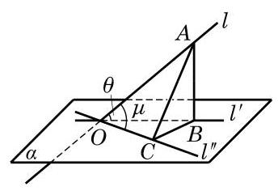
图 10-3-17
【编辑补证：角度边界】题中 是平面 的斜线，即它与平面相交但不垂直于平面，故它与投影所成的角满足 ，不包含 或 。 与平面内过 的直线 不重合，所以两直线所成的角满足 。
若 ，直接由 得结论。此时原解中从 向 作垂线的垂足 就是 ，不能把 当作非退化直角三角形。下列原解的三角形比较步骤只用于余下的 情形；此时 都在正弦函数的严格增区间内，推理成立。这样两种情形覆盖了题面允许的全部角度。
【教材原解（保留）】
证明 在 上取异于 的一点 ,过点 作 与 的垂线, 垂足分别是 与 ,连接 . 因为 是 在平面 上的投影, 是平面 的垂线， 是直角三角形， 是直角， 所以 . 在直角三角形 与 中,分别有
这个例题的证明不是“纯几何”的, 但数学不同分支的知识和方法的综合运用, 有时可以快捷地解决问题.
由此可见 . 因为在 中正弦函数是增函数,所以 .
如果 是平面 上的任意直线, 与 所成的角 可以通过把 在平面 上平行移动到通过 的位置 (不排除与 重合的情况)而得到. 据例 7 得知,总有 . 这说明了: 斜线与平面所成的角, 是这条斜线与平面内任何直线所成角中的最小的角.
(1)求 和底面 所成角的大小；
(2)求 和底面 所成角的大小.
关于平面的斜线及其在平面上的投影, 我们有下面的定理.
在讨论空间直线的垂直关系时，三垂线定理是一个常用的工具.
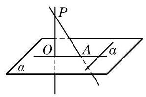
图 10-3-18
已知: 如图 10-3-18, 是平面 外一点, 是平面 的斜线,交 于点 . 过点 作平面 的垂线 ,垂足是 ,直线 是 在平面 上的投影.
证明 先证充分性,即证明从 可以推出 .
因为 平面 ,而 ,所以 . 这样,连同假设条件,直线 垂直于两条相交直线 与 ,从而它垂直于这两条相交直线所确定的平面 . 而直线 平面 ,于是 .
再证必要性,即反过来从 可以推出 .
同上,我们有 ,这个条件连同假设条件 ,推出直线 垂直于两条相交直线 与 所确定的平面 . 而直线 平面 ,于是 .
例 8 如图 10-3-19,已知正方体 .
求证: .
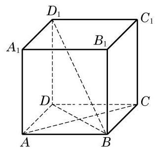
图 10-3-19
在此正方体中, 还有哪些面的对角线与 垂直? 为什么? 由此能得到 垂直于哪些截面?
例 9 如图 10-3-20,小河的一侧有一条笔直的道路 , 对岸有电塔 ,已知其高为 . 现只有小平板仪 (可用于测量水平的角度) 和皮尺作为测量工具, 请说明还需测量的数据, 然后运用三垂线定理给出求电塔顶 与道路 的距离 的公式.
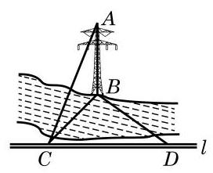
图 10-3-20
解 在道路 上取一点 ,使 ,再用小平板仪在 上另取一点 ,使 ,用皮尺测得 .
选择满足 (也可以是 或 的特殊角) 的点 使解题过程最简洁, 得到的计算公式最简单. 其他的选择也可解决问题, 但过程和结果都更复杂.
因为 是 在地面上的投影,且 ,由三垂线定理,得 ,从而斜线 的长度就是电塔顶 与道路 的距离 .
在直角三角形 中, ,故 . 而在直角三角形 中,由勾股定理,得 ,故 ,即电塔顶 与道路 的距离是
其中 是电塔的高度, 是道路 上所取两个点 与 之间的距离.
(1)若 ，则点 是 的___，心；
(2)若 ， ，则点 是边 的___，点；
(3)若 ，则点 是 的___，心.
(1)求证: ；
(2)若 ，求证:四边形 是正方形.
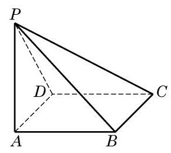
(第 3 题)
3.(1)因为 平面 ,所以 是 在平面 上的投影. 又 ,由三垂线定理,知 ,所以 .
(2)因为 平面 ,所以 是 在平面 上的投影. 又 ,由三垂线定理,知 . 而 是矩形,所以四边形 是正方形.
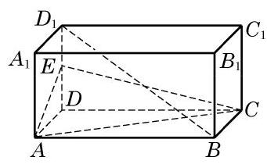
(第 1 题)
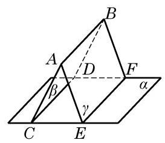
(第 3 题)
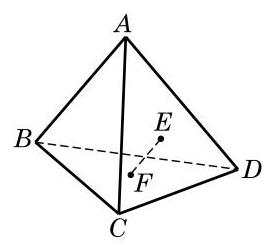
(第 1 题)
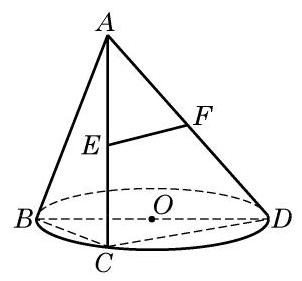
(第 2 题)
(1)求证: 平面 ；
(2)试在棱 上取一点 ，使 平面 .
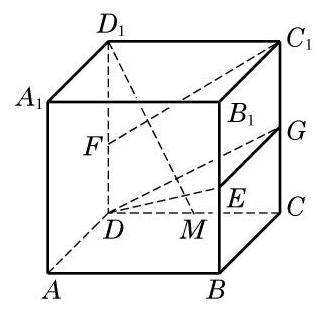
(第 3 题)
3.(1)提示: .
求证: .
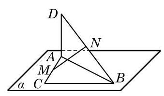
(第 5 题)